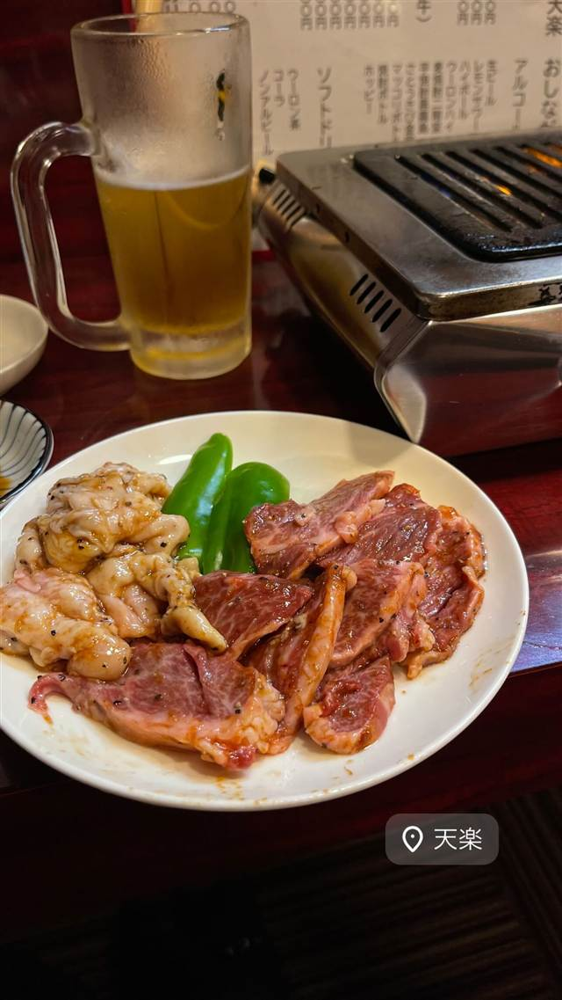

天楽
三軒茶屋の三角地帯で30年、女将から娘へ継ぐホルモン焼き
天楽
三軒茶屋の飲み屋街「三角地帯」で30年以上続く焼肉・ホルモン店「天楽」。創業した女将から娘へと代替わりしながら、アットホームな雰囲気でホルモン焼きを提供し続けている。
TRIVIA
豆知識
- 三軒茶屋・三角地帯の中でも「三茶最強のホルモン屋」と評されることがある
REVIEWS
世間の評判
3.23食べログ
タレの味と昭和レトロな雰囲気
- 市場から直接仕入れる新鮮な肉と自家製タレの味を評価する声が多い
- 昭和レトロな店内の雰囲気と店主の温かい人柄を評価する声がある
- 店内が非常に狭く、足を伸ばせないほど窮屈だと指摘する声が多い
- 予約が非常に取りにくく電話がつながらないこともあるという声がある
食べログ 口コミ61件
| 創業 | 三軒茶屋の三角地帯で30年以上営業を続ける老舗 |
|---|---|
| 看板 | ホルモン焼き |
| どこから | 23区の外れ・近郊 |
| 営業時間 | 月・火 休み 水〜日 17:00-22:00 |
| 予算 | 夜 ¥5,000～¥5,999 |
| 予約 | 予約可 |
| 場所 | 三軒茶屋駅 東京都世田谷区三軒茶屋（三角地帯） |
| メモ | 小さな店構えでカウンター含め最大10名ほど、座敷テーブルもある大衆焼肉店 |
食べたもの：焼肉とビール
NEARBY
近い店・同じ系統の店
-
 ★
醤油・中華そば 三軒茶屋駅
めん和正（わしょう）
看板のない行列店、永福町大勝軒系の煮干し中華そば
昼 ～¥999 夜 ～¥999
★
醤油・中華そば 三軒茶屋駅
めん和正（わしょう）
看板のない行列店、永福町大勝軒系の煮干し中華そば
昼 ～¥999 夜 ～¥999
-
 ★
醤油・中華そば 三軒茶屋
らーめん・わんたん ゆう輝屋
たんたん亭に連なる系譜の透き通った醤油ワンタン麺
昼 ¥1,000～¥1,999 夜 ¥1,000～¥1,999
★
醤油・中華そば 三軒茶屋
らーめん・わんたん ゆう輝屋
たんたん亭に連なる系譜の透き通った醤油ワンタン麺
昼 ¥1,000～¥1,999 夜 ¥1,000～¥1,999
-
 ★
焼肉 白金高輪駅
炭焼 金竜山
ロンドン帰りの店主夫妻が焼く上タン塩とシャトーブリアン
夜 ¥20,000～¥29,999
★
焼肉 白金高輪駅
炭焼 金竜山
ロンドン帰りの店主夫妻が焼く上タン塩とシャトーブリアン
夜 ¥20,000～¥29,999
-
 ★
焼肉 関内駅
関内苑 本店
韓国職人仕込みのキムチとA5和牛の手打ち冷麺
昼 ¥1,000～¥1,999
★
焼肉 関内駅
関内苑 本店
韓国職人仕込みのキムチとA5和牛の手打ち冷麺
昼 ¥1,000～¥1,999
-
 ★
焼肉 鶯谷駅
焼肉 鶯谷園
1968年創業、半世紀以上続く良心価格の厚切りタン
夜 ¥6,000～¥7,999
★
焼肉 鶯谷駅
焼肉 鶯谷園
1968年創業、半世紀以上続く良心価格の厚切りタン
夜 ¥6,000～¥7,999
-
 ★
焼肉 不動前
焼肉しみず
牛タンの中心部だけを使う厚切り黒毛和牛タン
夜 ¥10,000～¥14,999
★
焼肉 不動前
焼肉しみず
牛タンの中心部だけを使う厚切り黒毛和牛タン
夜 ¥10,000～¥14,999
ONSEN & SAUNA